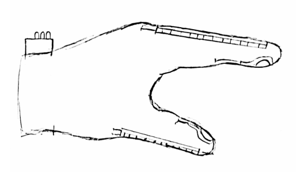

Finger Exercising Glove
A device meant to help restore proper hand function
Background
 This was a project that a friend and I worked on for Principles of Biomedical Instrumentation at JHU, taught by Dr. Nitish Thakor. It was an incredibly fun class because it was 95% designing cool devices. This was the first major design project for the class and my friend and I had maybe 2 nights to work on this.
We learned that conditions like cerebral palsy or osteoarthritis will greatly reduce hand function, making even basic tasks, like holding an apple, difficult. However, if the patients do a series of isometric hand exercises, they can slowly gain back some hand function and also can reduce the pain and inflamation caused by this disorder. However, if a patient is not with a physical therapist and tries to do the exercises alone, they could end up improperly doing the exercises and basically do nothing to help their condition
There are some training gloves out there that can be used for resistance based training but we had an idea for making a glove that allows the user to focus on sensor based exercise to bring back precise movement control.
The idea
 We thought of building a glove that can track the bending of the fingers and the force that they apply to an object.
We thought of building a glove that can track the bending of the fingers and the force that they apply to an object.
We would do this by adding flex sensors on the outsides of the fingers on the glove to measure the finger bend and we added force sensors to the tips of the fingers to see how strongly the fingers were pushing onto an object.
A Teensy 3.2 microcontroller would read the sensors and stream the data to a computer over serial to log the finger positions. A rgb LED would act as the user feedback to let the user know they have moved the fingers to the correct position or applied the right amount of force. A reset button would also be there to get the user's baseline hand position.
The system worked by saving the "zero" position of the fingers and forces whenever the the reset button was pressed. Then any finger bends or forces would be compared against the baseline. If a bend or force passed a certain threshold for a movement (like picking up an object with the pointer finger and thumb) then the corresponding lights would light up.
Implementation
We ended up getting a cheap, knitted glove off of amazon. This made it easier to route our wires because we could then physically "sew" the wires into the glove. I wanted to use conductive thread to make the sewing easier but it did not come in time so we had to go with the thinnest wire I could find in the BME design lab.
It does look a little rough around the edges but it was surprisingly comfortable to wear! The sensors were held onto the glove with a combination of thread and hot glue, but they stayed in place. The circuit board didn't interfere with any movement, probably due to us using non stranded wire.
The glove ended up working great! We got a lot of interest from the professors and class for what we built. I actually continued playing with the glove to see if I could try and game-ify the exercises by taking the serial data and porting it to a game of some sort. This would turn the glove into a sort of controller (like the ill fated Nintendo Powerglove). I ended up getting distracted with the endless work of grad school and had to put the idea on pause. It definitely could be something to look into now that I have more time...